4. Oscillating chemical reactions. Analysis of singular trajectories
4.1 The possibility of oscillatory behaviour of a chemical process. The limit cycle
Oscillatory behaviour of chemical processes has been observed experimentally many times over the last 100–150 years. Usually, however, such observations were made in complex heterogeneous systems under external influences and thus seemed to researchers to be a rather particular phenomenon. The situation changed after B. P. Belousov observed an oscillating chemical reaction in a liquid solution. This is the reaction of oxidation of malonic or citric acid by the bromate ion in the presence of cerium ions. After this reaction was studied by A. M. Zhabotinsky, a large number of researchers took up the study of oscillating chemical processes. The wide resonance that the Belousov–Zhabotinsky reaction had in the scientific world is connected with the fact that homogeneous chemical reactions usually do not display oscillatory behaviour.
Before proceeding to the consideration of methods of describing oscillating chemical reactions, we shall show that ordinary differential equations that are similar in structure to kinetic equations can have an oscillatory solution. Consider a system of two differential equations of the following form (Poincaré example):
Equations have the unique singular point X0 = Y0 = 0
Let us rewrite equation in polar coordinates: . After simple transformations we obtain the system of equations:
It is directly clear from equations that the trajectory
is a solution of equation . This solution represents the motion of the representative point along a circle of unit radius (Fig. 4.1).
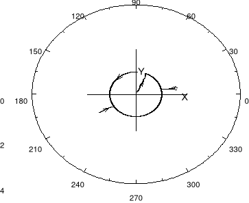
Thus, the variables X and Y return to their initial values at equal time intervals, that is, they describe an oscillatory process. The solutions of equations with the specified initial conditions, shown in Fig. 4.1, show that trajectories starting from points that do not lie on the unit circle tend to this circle with time and also display oscillatory behaviour. This type of trajectory bears the name "stable limit cycle". Limit cycles describe self-sustained oscillatory behaviour of dynamical systems. A limit cycle is called stable if small perturbations of the phase trajectory tend to zero with time, that is, phase trajectories near the cycle tend towards it. As we shall see later, dynamical systems can also have unstable limit cycles.
4.2 Analysis of singular trajectories. Criteria for the existence of limit cycles
The preceding consideration has shown that, besides singular points, singular trajectories can exist in the phase space: saddle separatrices and limit cycles. These trajectories are distinguished by the fact that they divide the phase space into domains whose boundaries cannot be crossed by phase trajectories. The Poincaré index method is used to analyse the behaviour of singular trajectories.
Consider a dynamical system that is described by equations :
Let us draw an arbitrary closed curve on the phase plane that does not pass through singular points. At each point of this curve, using equations one can construct a vector reflecting the direction of motion of the representative point of the dynamical system (Fig. 4.2).
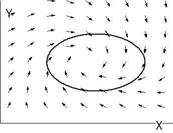
Starting from a certain point, we shall move along the chosen curve anticlockwise and count the number of revolutions of the vector reflecting the direction of motion of the system. The number of revolutions obtained is an integer (positive or negative, depending on the direction of the revolutions) and is called the Poincaré index. The following properties have been proved for the Poincaré index:
– the Poincaré index of a curve containing no singular points is equal to zero;
– the index of a curve enclosing a node, a focus or a centre is equal to +1;
– the index of a curve enclosing a saddle is equal to –1;
– the index of a curve enclosing several singular points is equal to the sum of the indices of these points;
– the index of a curve enclosing a closed trajectory (a limit cycle) is equal to +1.
These properties make it possible to obtain consequences that can be used in the analysis of the phase portrait of a dynamical system:
Inside a closed trajectory (a limit cycle) there is at least one singular point. Generally speaking, the number of singular points inside a limit cycle must be odd, the number of saddles being one less than the number of the remaining singular points.
Let a closed curve that does not pass through singular points have no common tangent with the phase trajectories at any of its points. Such a curve bears the name "contactless cycle". At all points of a contactless cycle the phase trajectories either enter the interior of the cycle or leave it to the outside. A contactless cycle has a Poincaré index equal to +1. The number of singular points inside such a cycle obeys the same rules as the number of singular points inside a limit cycle.
If in a certain region of the phase space a contactless cycle can be constructed, all phase trajectories are directed into its interior, and inside the cycle there is a unique unstable singular point, then this point is surrounded by a limit cycle.
The conclusion formulated in points 1 and 2 about the oddness of the number of singular points is, as a rule, valid in chemical systems. Exceptions are the cases where the singular points lie on the boundaries of the domain of definition of the system. In particular, if the model under consideration allows unbounded growth of the variables, a singular point may be located at infinity. An example of such a system is the thermal explosion model considered in Section 1.2. In this model we found two singular points. The low-temperature singular point turned out to be stable. It was also shown that the higher-temperature singular point is unstable. From the physical meaning of the model under consideration it is clear, however, that in this model the temperature of the reacting mixture can grow without bound. Thus, there is one more stable singular point, corresponding to an infinitely high temperature. The unique unstable point in this system is a saddle separating two stable singular points.
The conclusion given in point 3 makes it possible to determine whether the system under consideration has limit cycles and, consequently, oscillatory solutions.
There is also a whole series of other criteria and theorems that can be used to answer the question of whether the dynamical system under investigation displays oscillatory behaviour. An interested reader can find these criteria in the specialised literature. We shall confine ourselves to one more theorem, which states the following: if a stable focus turns into an unstable one in the course of a change of the parameters of the system, a limit cycle enclosing this focus is born. The birth of a limit cycle in the course of such a transformation of the phase portrait bears the name "Andronov–Hopf bifurcation".
4.3 The Brusselator
One of the chemical transformation schemes with which the oscillatory course of a reaction was studied bears the name "Brusselator" (after the place of its development, Brussels) or the trimolecular model. This is an idealised scheme that has no exact correspondence to any real chemical reaction. However, it describes and predicts many phenomena that are observed in experiment and, at the same time, is simple enough for analysis. The scheme is the following set of stages:
The rate constants of all stages in this reaction scheme are taken equal to unity in order to simplify the analysis. The substances A, B, C and D are assumed to be taken in excess, so that their concentrations do not change with time. Thus, the only variables of interest to us are the concentrations of the substances X and Y. The kinetic equations for such a reaction scheme can easily be written in the following form:
Note that the kinetic scheme contains a nonlinear term – the trimolecular stage – as well as feedback – an increase in the concentration of substance X in the reaction involving it (autocatalytic stage 3).
Equations make it easy to find the steady state. Setting both equations equal to zero, we find the coordinates of the steady-state point:
To determine the stability of this singular point, let us write the matrix of linear coefficients:
The coefficients of the characteristic equation have the form:
Coefficients show that as the parameter B increases the singular point loses its stability. Thus, at an Andronov–Hopf bifurcation is observed. At the unstable singular point turns out to be surrounded by a limit cycle. A numerical solution of the system of equations , illustrating the oscillatory behaviour of the system, is given in Fig. 4.3.
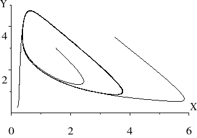
4.4 Stability of the operation of a chemical reactor
Consider a first-order chemical reaction proceeding in a continuously stirred tank flow reactor whose wall temperature is maintained constant and equal to T0. The kinetic equation for the concentration of the reactant can be written in the following form:
where q is the volumetric rate of the flow entering and leaving the reactor; V is the reactor volume;
A0 is the concentration of the reactant in the flow entering the reactor;
k, E0 are the pre-exponential factor and the activation energy of the reaction.
The kinetic equation for the change of the temperature of the mixture in the reactor will be written in the following form:
where C, are the specific heat capacity and the density of the medium; Ti is the temperature of the flow entering the reactor.ρ
Equations and essentially represent the material and heat balance conditions of the reactor. It should be noted that these equations contain certain approximations. In particular, they assume that the density and heat capacity of the substance in the reactor do not depend on the degree of conversion.
To reduce equations and to dimensionless form, one can use the following procedure. Let us denote all the independent variables of the system under study using coefficients Qi:
Let us substitute the notations into the original equations:
Let us set three coefficients in front of the terms in equations equal to unity:
From the relations obtained we determine the required coefficients Q1, Q2 and Q3. Note that, by setting the coefficients in front of particular terms equal to unity, one can obtain dimensionless equations of different form.
With the use of the procedure described, equations and are reduced to the dimensionless form :
with the following notation:
The steady states of the system are found from the equations:
Adding equations and , we obtain the relation:
Having substituted into , we obtain an equation from which the coordinates of the singular points can be found:
A plot of the right-hand side of equation is shown in Fig. 4.4. Since the left-hand side of equation is a linear function, it is obvious that the system under consideration can have either one or three singular points.
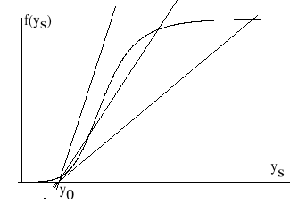
One more way of determining the number of singular points in the analysis of the stability of a chemical reactor consists in constructing the following bifurcation diagram. Let us transform equation to the following form:
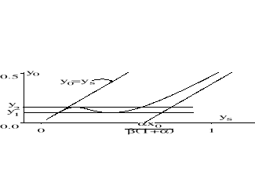
Fig. 4.5 shows the dependence and its asymptotes. It can be seen from the figure that in the range of wall temperatures y1 < y0 < y2 the system has three steady states.
To carry out the analysis of the phase portrait, let us construct the principal isoclines of the system under consideration. Setting the right-hand side of the first of equations equal to zero, we obtain the expression
From the second equation of system we obtain:
Isoclines and are shown in Fig. 4.6.
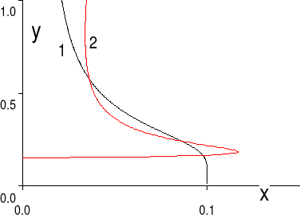
To determine the stability of the singular points, let us determine the matrix of linear coefficients for equations :
Using matrix , we obtain the coefficients of the characteristic equation:
Let us determine the stability domain of the steady states. For this purpose we set the quantity in equal to zeroσ
and, from the equality obtained , express the quantity . Let us substitute the expression obtained into and transform it to the form:
Let us express from the quantity from , substitute it into the equality and obtain the expression:
Expressions and determine, in parametric form, the stability boundary of the singular points in the x0 – y0 plane (Fig. 4.7).
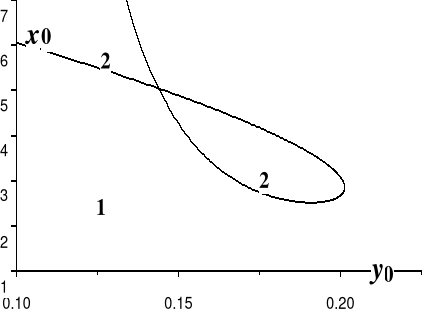
In domain 1 in Fig. 4.7 the quantity is positive and, thus, the singular points are stable. In domain 2 the singular points are unstable.σ
Setting the expression for the coefficient equal to zero, we find the domain of parameters in which more than one singular point exists. Indeed, at < 0 the singular point is a saddle and separates two other singular points. In a similar way to what was done above, we find, in parametric form, the equations of the curve = 0:ΔΔΔ(4.27)
..(4.28)
The curves = 0 and = 0 are shown together in Fig. 4.8. These curves divide the plane of the parameters x0, y0 into several domains. In the domain of parameters 1 in Fig. 4.8 there is a unique stable singular point. In domain 2 the unique point becomes unstable. Thus, on crossing the boundary of domains 1 and 2, aσΔ
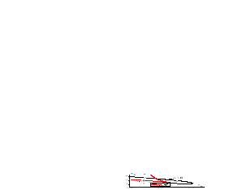
Hopf–Andronov bifurcation, in which a limit cycle is born, is observed. This means that oscillatory behaviour of the system under consideration is observed in domain 2. In domains 3 and 4 there is a saddle singular point separating two other points, which we shall denote A and B. In domain 4 the points A and B are stable. In domain 3 one of the points A and B is stable and the other is unstable. It should be noted that at the boundary between domains 2 and 3 the curves = 0 and = 0 do not coincide with each other. This can be demonstrated by enlarging Fig. 4.8. Thus, in the x0, y0 plane there are small domains within which the behaviour of the reactor differs from those described above. Let us also note that the curve = 0 characterises the stability of only one singular point, namely the one that changes its stability smoothly. The stability of the two other singular points that arise on crossing the curve = 0 must be analysed separately.σΔσΔ
The consideration of singular points given above shows that even in the case of a simple first-order reaction in a flow chemical reactor a rather large set of operation regimes can be realised. To obtain a more complete picture of these regimes, let us consider the possible phase portraits of the system.
4.5 Oscillatory regimes of a chemical reactor
The analysis of the stability of the steady states of a flow chemical reactor given in the previous section is insufficient to answer the question of the presence or absence of oscillatory regimes of the reaction for a particular set of parameters. To reveal oscillatory regimes, it is necessary to use methods of analysis of singular trajectories, some of which were considered in Section 4.2. Let us first illustrate the use of the contactless cycle for proving the existence of an oscillatory process.
Let a first-order reaction, as before, proceed in a flow reactor, the dynamics of which is described by the equations:
Let us choose the parameters of the flow reactor such that only one steady state exists in the system and the corresponding singular point is unstable. Such parameters are, for example, = 0.05, = 0.5, x0 = 3.0, y0 = 0.18. The point chosen falls into domain 2 in Fig. 4.8 and, consequently, corresponds to the existence of a unique unstable steady state. Let us construct the principal isoclines of the system (Fig. 4.9) In the figure, the ordinate axis is drawn on a logarithmic scale for clarity. αβ
To construct a contactless cycle, let us draw a straight line parallel to the abscissa axis through the point y0. Along this line the right-hand side of equation is positive, i.e. at all points of this line the coordinate y grows with time (the derivative on the left-hand side of equation is positive). Thus, phase trajectories cross the constructed line from bottom to top.
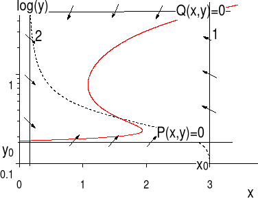
Through the point x0 let us draw a vertical line x = x0. In accordance with equation , at each point of this line the variable x decreases, i.e. the phase trajectories are directed to the left.
Through the point of intersection of the line x = x0 and the curve Q(x,y) = 0 (denoted by the numeral 1 in Fig. 4.9) let us draw one more horizontal line up to its intersection with the curve P(x,y) = 0 (denoted by the numeral 2). At point 1 the right-hand side of equation vanishes, by virtue of the equation of the curve Q(x,y) = 0. On moving to the left along the horizontal line passing through point 1, the variable x decreases while the variable y keeps its value. In accordance with equation , the decrease of the variable x makes the right-hand side of equation negative. Thus, at each point of this line the phase trajectories are directed downwards.
Let us complete the construction of the contactless cycle by drawing a second vertical line through point 2. At point 2 the right-hand side of equation is zero (since it belongs to the isocline P(x,y) = 0). On moving down the line passing through point 2, the variable y decreases, and the first, negative, term on the right-hand side of equation decreases. From this it can be concluded that at each point of this line the phase trajectories are directed to the right.
Thus, we have constructed a closed contour and proved that all phase trajectories on the boundaries of this contour are directed into its interior. In this case the constructed contour is a contactless cycle. Since there is a unique unstable singular point inside it, we can conclude that the system has a stable limit cycle describing the oscillatory course of the reaction. The results of numerical integration of equations and are shown in Fig. 4.10.
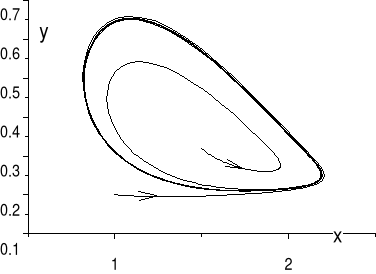
The proof of the existence of oscillatory behaviour of the system considered above is sufficient but not necessary. In reality, the existence of an unstable singular point is not a necessary condition for the oscillatory course of the process. This is connected with the fact that, besides stable limit cycles, unstable limit cycles can also exist in the phase space. An unstable limit cycle is also a closed singular trajectory corresponding to the oscillatory course of the process. The difference between an unstable cycle and a stable one is that phase trajectories near a stable cycle tend towards it, while near an unstable cycle they depart from the cycle without bound. Thus, an arbitrarily small perturbation disrupts the oscillatory process described by an unstable limit cycle.
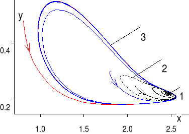
Unstable limit cycles, as a rule, exist simultaneously with stable ones. The phase portrait of the system is then a stable singular point of the node or focus type surrounded, successively, by an unstable and a stable limit cycle (Fig. 4.11).
Fig. 4.11 shows the results of numerical calculation of phase trajectories for a flow reactor. The singular point corresponding to the steady state of the system (marked by the numeral 1 in the figure) is stable. Phase trajectories near this singular point tend towards it. The singular point is surrounded by an unstable limit cycle (denoted by the numeral 2). If the initial conditions are chosen outside this cycle, the trajectories tend to the outer stable limit cycle (marked by the numeral 3 in the figure). Thus, for an oscillatory regime of reactor operation to be realised, a sufficiently strong perturbation is needed, one that moves the representative point out of the region bounded by the unstable cycle. Such a regime of the onset of oscillations is called "hard".
Taking into account the possibility of hard regimes of oscillatory processes in a continuously stirred tank flow reactor, let us consider the possible phase portraits of such a system (Fig. 4.12).
Fig. 4.12a shows a unique stable node. Figs 4.12b and c show phase portraits corresponding to the hard and soft regimes of excitation of the oscillating reaction. In the former case the system has a stable singular point, and in the latter case an unstable one. Figs 4.12d, e and f correspond to the existence of
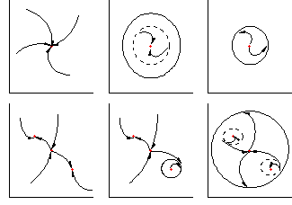
three steady states. In Fig. 4.12d a saddle point separates two stable singular points, for example, two foci. Fig. 4.12e illustrates the case where one of these foci becomes unstable and has a stable limit cycle around it. All three singular points can in turn be surrounded by a large limit cycle. One of the possible variants is shown in Fig. 4.12f.
The types of kinetic behaviour of a flow reactor are not exhausted by the phase portraits given above. In particular, consideration of the radical polymerisation process in a flow reactor shows the possibility of the existence of five singular points.
Problems
1. Obtain the oscillatory solution of the Poincaré system of equations under various initial conditions.
2. Determine the phase portrait of the following enzymatic reaction:
In this scheme A3 and A2 denote adenosine triphosphate and adenosine diphosphate. These compounds are the substrates of enzymatic reactions. D1, D2 and D3 denote different forms of the enzyme. D1 is the enzyme in the active form, D2 is the enzyme–substrate complex, D3 is the reserve of the enzyme in the inactive form, which passes into the active form upon complexation with molecules of adenosine diphosphate. To reduce the number of equations, use the following approximations:ν
1)
2) The rate of change of the enzyme concentrations is so high that the quasi-steady-state approximation can be used for all forms of the enzyme.
3. Determine the phase portrait of the reaction with activation energy E and heat effect Q, proceeding in a non-isothermal reactor of volume V with wall temperature T0, into which the reactant with concentration A0 is fed at a constant volumetric rate q. Assume that the reactant is not withdrawn from the reactor (a semi-batch reactor or a reactor with recycle).
4. Thermokinetic oscillations according to Frank-Kamenetskii.
Determine the phase portrait of a system in which the reaction
assuming that the concentration of the initial substance A is constant and that the thermal effect of the first reaction is negligibly small.